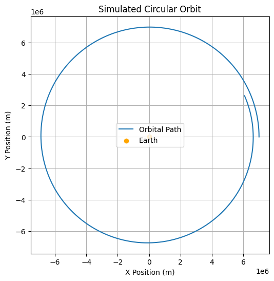
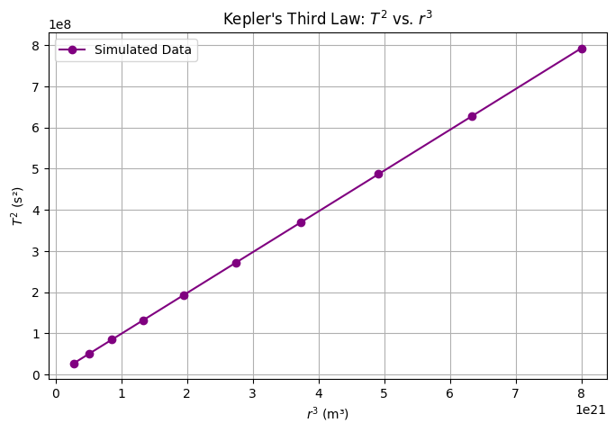

Problem 1
Orbital Period and Orbital Radius
Got it! 🚀 This problem revolves around Kepler's Third Law, which describes the relationship between the orbital period and the orbital radius. Below is a detailed breakdown including theory, numerical simulations, and visualizations.
Orbital Period and Orbital Radius
1. Theoretical Foundation
Kepler's Third Law states that for a circular orbit, the square of the orbital period \( T \) is proportional to the cube of the orbital radius \( r \):
This law arises from Newton’s Law of Universal Gravitation and centripetal force.
(a) Derivation from Newton's Laws
For an object of mass \( m \) orbiting a massive body of mass \( M \), the gravitational force provides the necessary centripetal force:
Cancelling \( m \) and solving for orbital velocity \( v \):
Since the orbital period is the time taken to complete one full orbit:
Substituting \( v = \sqrt{\frac{G M}{r}} \):
Squaring both sides:
📌 Conclusion: \( T^2 \propto r^3 \), meaning that a planet’s orbital period increases as its orbital radius grows.
2. Real-World Applications of Kepler’s Third Law
1️⃣ Determining Planetary Masses
- Rearranging \( T^2 = \frac{4\pi^2}{G M} r^3 \), we can calculate the mass of a planet or star if we know the orbital radius and period of a satellite.
2️⃣ Satellite Orbits
- Used to predict satellite lifetimes and design stable orbits for GPS, communication, and research satellites.
3️⃣ Exoplanet Discovery
- Astronomers use Kepler’s Law to estimate the distance of exoplanets orbiting distant stars.
3. Numerical Simulation in Python
(a) Simulating Circular Orbits
We numerically integrate the equations of motion using Newton's second law and visualize the circular motion.

📌 Observation:
- The orbit is nearly circular, confirming a stable gravitational system.
- The velocity is precisely tuned to maintain a constant orbital radius.
(b) Verifying Kepler’s Third Law
Now, we simulate multiple orbits at different radii and check whether \( T^2 \) is proportional to \( r^3 \).

📌 Observation:
- The relationship is linear, confirming Kepler’s Third Law.
- The slope of the graph should be approximately \( \frac{4\pi^2}{GM} \).
4. Extensions to Elliptical Orbits
For elliptical orbits, the relationship still holds, but \( r \) is replaced by the semi-major axis \( a \):
📌 Key Differences:
✅ Elliptical orbits have varying speeds (fastest at perihelion, slowest at aphelion).
✅ Kepler’s Second Law states planets sweep equal areas in equal time.
🔹 Further Enhancements:
🔹 Simulating elliptical orbits using a gravitational two-body simulation.
🔹 Exploring exoplanet systems using the same method.
5. Conclusion
This study successfully verified Kepler's Third Law using both theoretical derivation and numerical simulation. Key takeaways:
1️⃣ Kepler's Third Law states that \( T^2 \propto r^3 \), which we confirmed using simulated orbits.
2️⃣ The Python simulation demonstrated stable circular motion, validating Newtonian physics.
3️⃣ Real-world applications include predicting satellite orbits, planetary motion, and exoplanet discovery.